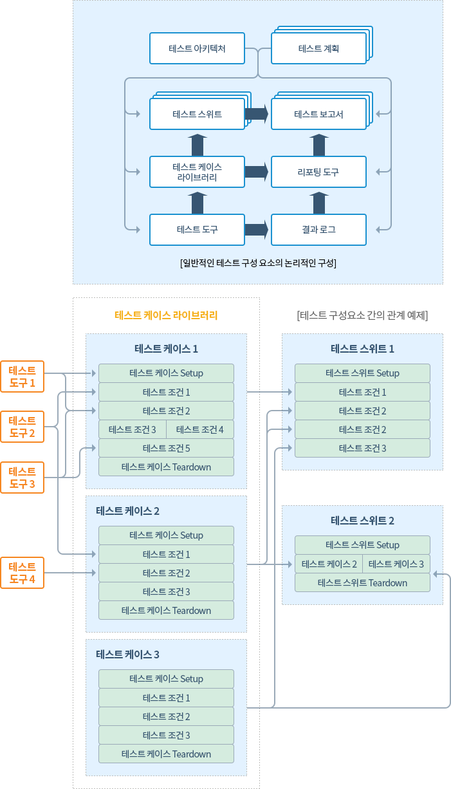

| 활동(Activity)명 | 2.1 비즈니스 로직 분석 |
|---|---|
| 목적 | 기술이 배제된 상태에서 업무를 이해하고 분석하고 명세하는 활동이며, 이 활동은 추상활동 또는 그룹활동으로 구체적인 세 가지 활동을 대표하는 활동임
|
| 절차 |
|
| 역할자 | 시스템 분석가, 시스템 설계자 |
| 산출물 | 분석 모델(분석 도메인 모델 + 컴포넌트 명세 모델), POC 프로토타입 결과 |
| 가이드 |
|
| 활동(Activity)명 | 2.2 UI 분석 |
|---|---|
| 목적 | 시스템의 사용자를 조사하여 분석하고 개략적인 화면 간의 이동을 분석하여 주요 UC 스토리보드와 프로토타입을 개발하는 활동임
설계로 들어가기 전에 주요 UC 스토리보드를 정의하고 UI 프로토타입을 개발함 |
| 절차 |
|
| 역할자 | UI Designer |
| 산출물 | 페르소나, 스토리보드, 프로토타입 |
| 가이드 |
|
| 활동(Activity)명 | 2.3 테스트 계획서 작성 |
|---|---|
| 목적 | 분석 단계를 통해 식별된 기능 및 비기능 요구사항에 대해 SW 시스템 설계 명세가 요구사항에 만족하는지 검증하고 보장하기 위해 테스트 전략을 포함하여 계획서를 작성함
테스트할 대상을 사전에 식별하여 그에 맞는 테스트 전략을 수립함 |
| 절차 |
|
| 역할자 | 테스터(리더, 설계자) |
| 산출물 | 테스트 계획서 |
| 가이드 | 테스트 전략, 테스트 계획, 테스트 베드를 만듦 |
| 활동(Activity)명 | 2.4 테스트 케이스 작성 |
|---|---|
| 목적 | 분석 결과를 토대로 테스트를 수행하는 절차와 방법에 대해 기술함
|
| 절차 |
|
| 역할자 | 테스터(리더, 설계자) |
| 산출물 | 테스트 케이스명세서 |
| 가이드 |
테스트 시스템 아키텍처

|